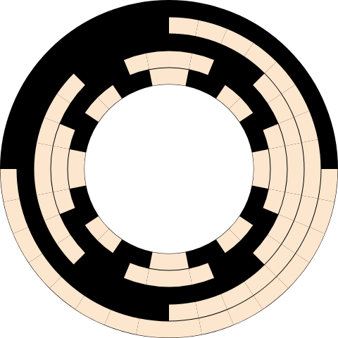

Implémentation
Dans cette sous-section, on présente différentes implémentations d'algorithmes générant des codes de
Beckett-Gray.
Les codes utilisés sont disponibles sur
github/enpeluche/beckett-gray-research.
GC
GC
$n=1$:
[$0$, $1$]
$l=[0]*2^n$
$i$ de $0$ à $2^{n-1} - 1$:
l[$i$] = [$0$]+[GC($n-1$)[$i$]]
$i$ de $2^{n-1}$ à $2^n - 1$:
l[$i$] = [$1$]+[list(reversed(GC($n-1$)))[$i-2^{n-1}$]]
$i$ de $0$ à $2^n - 1$:
l[$i$] = flatten_list(l[$i$])
l
Ce code est une implémentation de l'algorithme de génération de séquences de Gray réfléchie.
La fonction $GC(n)$ prend un entier $n$ comme argument et génère une séquence de Gray de longueur $2^n$,
sur des chaînes binaires de longueur $n$. La condition if $n=1$: renvoie $[0, 1]$, qui est la séquence
de Gray pour $n=1$. Ensuite, un tableau $l$ est initialisé avec des zéros, de longueur $2^n$. Deux
boucles for sont utilisées pour remplir la première moitié et la deuxième moitié du tableau $l$ avec des
sous-listes correspondant à la génération récursive des séquences de Gray pour $n-1$. La fonction
flatten list est utilisée pour aplatir les sous-listes. La séquence résultante est
renvoyée. La récursivité de cet algorithme entraîne une utilisation importante de la mémoire pour de
grandes valeurs de $n$.
GCParity
GCParity
l = [[$0$]$*n$]
$i$ de $1$ à $2^n - 1$:
$i\%2=1$:
l.append(l[$-1$].copy())
l[$-1$][$-1$]=l[$-1$][$-1$]$\oplus 1$
l[$-1$][$-1$]=l[$-1$][$-1$]$\oplus 1$
$k$ de $n-1$ à $0$:
l[$-1$][$k$]=$1$:
l.append(l[$-1$].copy())
l[$-1$][$k-1$]=l[$-1$][$k-1$]$\oplus 1$
l[$-1$][$k-1$]=l[$-1$][$k-1$]$\oplus 1$
break
l
C'est une autre façon de générer une séquence de Gray. Cela fonctionne en regardant la parité de
l'indice de la ligne du code que l'on génère. Si cette ligne est impaire, il suffit juste d'inverser le
dernier bit de la ligne précédente, ici réalisé avec un XOR entre ce bit et $1$. Si cette ligne est
paire, on inverse le bit juste à gauche du bit à $1$ le plus à droite.
GCmod
GCmod
l = [[$0$]$*n$ pour $i$ de $0$ à $2^n - 1$]
$i$ de $0$ à $2^n - 1$:
$j$ de $0$ à $n - 1$:
$(i+2^j+2^{j+1}) ~ \% ~ 2^{j+2}$ < $2^{j+1}$
l[$i$][$n-j-1$]=$1$
l
Une dernière façon de générer une séquence de Gray. On cherche à trouver où rajouter les $1$ dans la
séquence en utilisant le fait que les bits à la position $j$ sont changés tous les $2^{j+1}$
itérations.

On peut l'observer sur cette représentation graphique un code de Gray pour $n=5$, où les bits au
centre changent toutes les deux itération, puis ceux à côté en allant vers l'extérieur toutes les
quatre itérations, puis toutes les huit itérations etc.